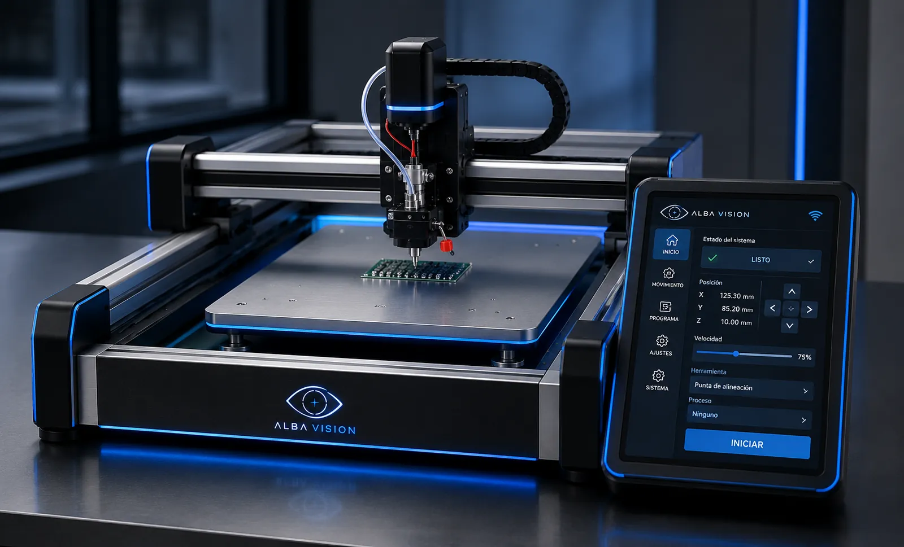

Qué estación se satura y cuál respira
- Tiempo con gente en cada estación
- Cuánto de ese tiempo fue desplazamiento
- Pausas largas, para revisar una por una
 Hablemos ↗
Hablemos ↗
Visión artificial aplicada al trabajo real. Nació con UNBLIND, para que una persona ciega sepa qué tiene enfrente; hoy esa misma mirada mide cocinas, baches y estrellas.
01 / Vision Ops
Vision Ops convierte el vídeo de un turno en tiempos, esperas y uso de cada estación, con el fotograma que respalda cada número.
Uso por estación
Subes el vídeo de un turno y recibes un reporte en español. Tu vídeo viaja cifrado, se analiza y el original se borra solo; sólo se guarda el instante que respalda cada hallazgo.
02 / Lentes · UNBLIND
Aquí empezó Alba. UNBLIND lee, describe y ubica lo que tienes enfrente, y ya funciona también en unos lentes con cámara. Está en desarrollo.

Lee textos en voz alta, describe la escena y reconoce productos y códigos.
Te guía con sonido hasta tus objetos guardados y reconoce a las personas que tú registras.
Se usa con la voz y con TalkBack, en el teléfono o en lentes con cámara.
El Dev Kit de Alba Labs: lentes abiertos para crear tus propias aplicaciones. En la industria, los lentes van como piloto bajo pedido.
03 / Surface Ops
La cuadrilla toma la foto en la calle y la oficina recibe el contorno, el área, el corte y la ubicación, sin cinta ni croquis a mano.

04 / Alba Space y Alba Labs
La visión que mide una cocina también orienta un satélite, y se abre para que otros construyan con ella.
Un solo sensor óptico para que un satélite pequeño sepa hacia dónde apunta, siga basura espacial y se acerque a otro objeto. En pruebas en tierra.
Explorar Alba Space ↗ Open hardware · Educación · IASmartglasses abiertos, módulos de cámara y robots educativos para construir con visión artificial.
Entrar al laboratorio ↗05 / Cómo trabajamos
Antes de prometer, medimos. Cada proyecto empieza con un caso real tuyo y crece sólo si funciona.
Platicamos de tu operación y vemos si la visión artificial resuelve algo concreto.
Medimos un caso real tuyo; en Vision Ops puedes empezar subiendo un vídeo.
Unas semanas con tu operación, con un reporte que revisamos juntos.
Si funciona, lo conectamos a tu día a día.
06 / Casos
Diseñamos alrededor de restricciones reales y validamos cada solución en el contexto donde deberá funcionar.

La inspección manual limitaba la repetibilidad y consumía tiempo especializado.
Visión integrada a la máquina existente, con captura controlada y análisis automático.
Un proceso consistente, trazable y preparado para comparar cada prueba.
Óptica · Iluminación · Procesamiento de imagen · Hardware
07 / Hablemos
Platícanos de tu operación y te decimos con honestidad si lo podemos medir. Te respondemos por WhatsApp o por correo.